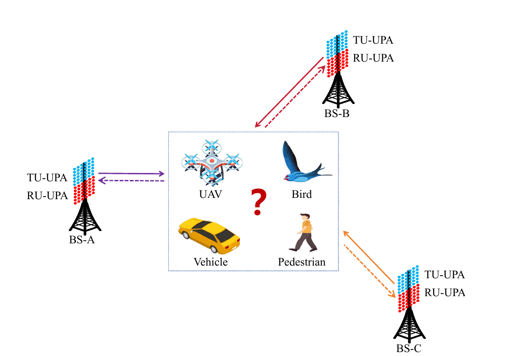
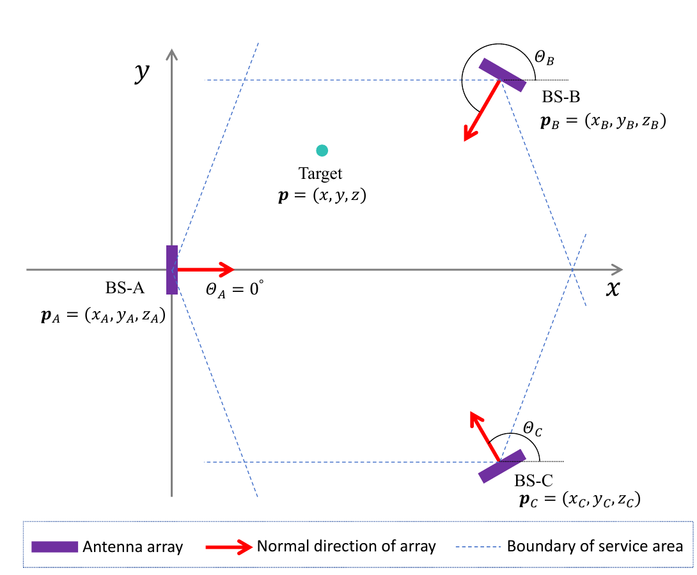
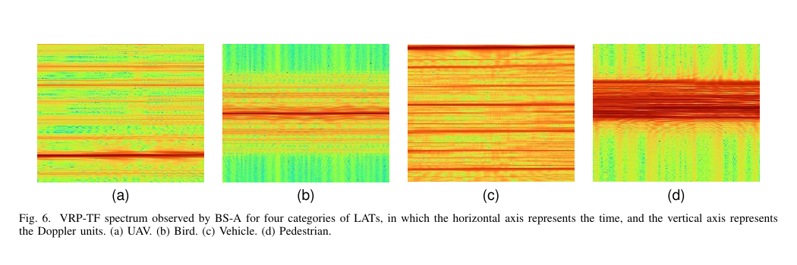
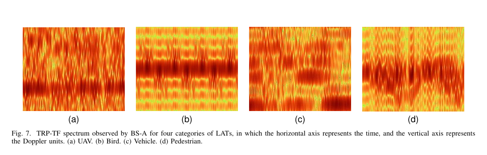
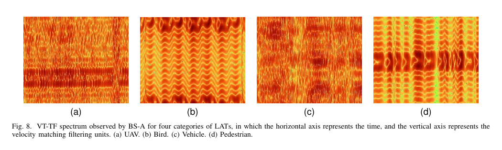
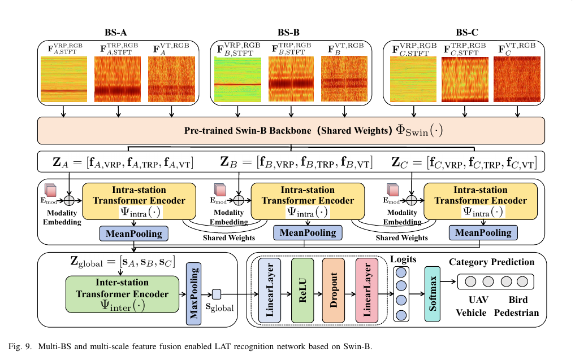

Multi-BS scenario
Networked ISAC sensing with three cooperative base stations.
1Tsinghua University 2China Mobile Research Institute
In this paper, we propose a low-altitude target (LAT) recognition scheme based on multi-base station (BS) collaboration and multi-scale feature fusion for integrated sensing and communications (ISAC) network. We formulate the motion equations, echo channels, and echo signals for unmanned aerial vehicle (UAV), bird, vehicle, and pedestrian under multi-BS collaborative monitoring scenario. Then we extract the velocity-resolution-preferred time-frequency spectrum, time-resolution-preferred time-frequency spectrum, and velocity-transfer time-frequency spectrum observed by each BS from echo signals. We collectively refer to these three types of time-frequency spectrum as the multi-scale feature of the LAT. Next, we design a multi-BS and multi-scale feature fusion enabled LAT recognition network with Swin Transformer, which employs the visualized images of multi-scale feature to jointly recognize the target through deep feature extraction, intra-BS feature interaction, inter-BS feature interaction, and target recognition output. We generate a massive echo signal dataset comprising 1,440,000 samples for LAT recognition within ISAC network. This dataset can serve as a public benchmark to evaluate our proposed scheme and facilitate future research. Simulation results demonstrate that the proposed scheme realizes high recognition accuracy and robust unseen-subtype generalization, confirming the effectiveness of multi-scale feature fusion and the additional gains brought by multi-BS collaboration.
Networked ISAC sensing with three cooperative base stations.
VRP-TF, TRP-TF, and VT-TF capture complementary motion cues.
Shared Swin-B with intra-BS and inter-BS feature interaction.
1,440,000 samples across 40 target subtypes and six SNR settings.
The recognition task is built on a networked ISAC sensing cell, where three BSs observe low-altitude targets from complementary geometric views.


VRP-TF is obtained by using a long STFT window, which provides high velocity resolution and better observation of LAT velocity details. The resulting spectra show class-dependent horizontal stripe patterns.

TRP-TF is obtained by using a short STFT window, which preserves high time resolution. It displays periodic envelopes caused by the periodic micro-motions of different LAT categories.

VT-TF replaces the velocity-FFT calculation with matched filtering and is composed of velocity component transition amounts. It reflects micro-motion periodicity while retaining more velocity distribution details.

We design a multi-BS and multi-scale feature fusion enabled LAT recognition network with Swin Transformer, which employs the visualized images of multi-scale feature to jointly recognize the target through deep feature extraction, intra-BS feature interaction, inter-BS feature interaction, and target recognition output.

Training and testing samples share the same target subtypes, evaluating recognition accuracy under matched subtype distributions.
Testing samples contain target subtypes excluded from training, evaluating generalization to new low-altitude target subtypes.
| Scheme | 3 dB | 8 dB | 13 dB | 18 dB | 23 dB | No noise | Avg. |
|---|---|---|---|---|---|---|---|
| BS-A: VRP | 94.70 | 97.69 | 98.79 | 99.00 | 99.14 | 99.11 | 98.07 |
| BS-A: TRP | 95.51 | 98.50 | 99.20 | 99.43 | 99.39 | 99.44 | 98.58 |
| BS-A: VT | 93.01 | 97.63 | 98.88 | 99.16 | 99.30 | 99.32 | 97.88 |
| BS-A: VRP+TRP+VT | 96.52 | 98.88 | 99.42 | 99.57 | 99.63 | 99.65 | 98.94 |
| BS-B: VRP+TRP+VT | 97.00 | 98.84 | 99.33 | 99.52 | 99.50 | 99.53 | 98.95 |
| BS-C: VRP+TRP+VT | 96.75 | 98.81 | 99.38 | 99.52 | 99.53 | 99.55 | 98.92 |
| BS-A/B/C: VRP+TRP+VT | 99.52 | 99.91 | 99.95 | 99.97 | 99.97 | 99.97 | 99.88 |
| Scheme | 3 dB | 8 dB | 13 dB | 18 dB | 23 dB | No noise | Avg. |
|---|---|---|---|---|---|---|---|
| BS-A: VRP | 87.64 | 90.03 | 91.06 | 91.53 | 91.74 | 92.14 | 90.69 |
| BS-A: TRP | 90.05 | 93.58 | 94.67 | 95.06 | 95.28 | 95.43 | 94.01 |
| BS-A: VT | 87.56 | 92.73 | 94.33 | 94.95 | 95.31 | 95.51 | 93.40 |
| BS-A: VRP+TRP+VT | 91.65 | 94.44 | 95.69 | 96.10 | 96.24 | 96.36 | 95.08 |
| BS-B: VRP+TRP+VT | 91.52 | 94.65 | 95.81 | 96.38 | 96.73 | 97.03 | 95.35 |
| BS-C: VRP+TRP+VT | 92.26 | 94.62 | 95.83 | 96.24 | 96.42 | 96.47 | 95.31 |
| BS-A/B/C: VRP+TRP+VT | 96.08 | 97.74 | 98.19 | 98.26 | 98.30 | 98.34 | 97.82 |
| Scheme | 3 dB | 8 dB | 13 dB | 18 dB | 23 dB | No noise | Avg. |
|---|---|---|---|---|---|---|---|
| Proposed | 96.08 | 97.74 | 98.19 | 98.26 | 98.30 | 98.34 | 97.82 |
| Swin-B + Mean Fusion | 94.60 | 96.90 | 97.82 | 98.07 | 98.23 | 98.38 | 97.33 |
| ConvNeXt-B + Mean Fusion | 93.90 | 95.73 | 96.65 | 97.14 | 97.45 | 97.69 | 96.43 |
| ViT-B/16 + Mean Fusion | 93.65 | 95.39 | 95.86 | 96.18 | 96.26 | 96.41 | 95.62 |
Experimental results demonstrate that multi-scale feature fusion can enhance the accuracy of LAT recognition, and multi-base station fusion can further boost the accuracy of LAT recognition.